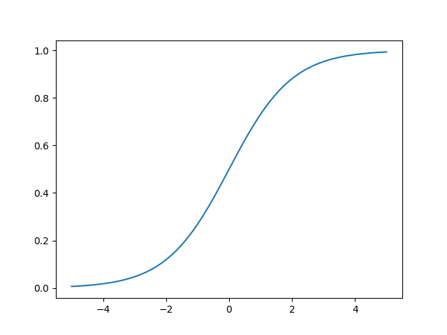

Backpropagation
1 Topic oveview: backpropagation
1.1 Warm up questions
- What is a neural network?
- What is the difference between supervised and unsupervised learning? Give an example of each? Does anyone know an example other than what we have discussed in class for unsupervised learning?
- What is the activation function we have used for the perceptron and delta rule networks?
- What role does "error" play in the perceptron and delta learning rules?
- For a multilayer network how do you know how much of the "error" to pass back into the deeper layers of the network?
2 Sigmoid Functions
Our prior networks have been forms of threshold units. Check to see if our activation cleared a certain hurdle, and if so set its value to 1 or -1. But it is more common to scale the output continuously between a lower and upper bound. One of the intuitions is that this is like a probability that the neuron might fire.
2.1 An aside: literate programming
Human readable code. One of the many contributions from Don Knuth (along with Tex/LaTeX and the Computer Modern font). Noweb is a tool for this is still maintained and is used in these next snippets of code.
2.1.1 Tools for literate programming
The tools are usually language specific. Here is a general website.
For python something sort of like this are Jupyter notebooks (also availabe for R), and for R and R markdown file (RMD).
- Org Babel (emacs specific) http://orgmode.org/worg/org-contrib/babel/intro.html
- Jupyter Notebooks http://jupyter.org/about.html
- Noweb https://www.cs.tufts.edu/~nr/noweb/
- Knitr (R tool) https://yihui.name/knitr/
- Haskell https://wiki.haskell.org/Literate_programming
2.2 What is a sigmoid function and what does it look like?
def sig (z): return 1.0/(1 + np.exp(-1*z))
import numpy as np import matplotlib matplotlib.use("Agg") import matplotlib.pyplot as pyp def sig (z): return 1.0/(1 + np.exp(-1*z)) xs = np.linspace(-5,5,101) ys = map(sig,xs) pyp.plot(xs,ys) pyp.savefig("./sig.png") return("./sig.png")
\(\hspace{0.1cm}\)

Figure 1: Plot of the Sigmoid Function \(\frac{1}{1+e^{-z}}\).
2.3 A few questions
- Why is it called "sigmoid?"
- What advantage does it offer over a threshold function?
- Is it the only "sigmoid" function? Does it have other names?
- Can you guess an an advantage to this particular form of the equation?
- How do use this with a neural network, i.e. what is \(z\)?
3 How we use it
Have to input the activation of the neuron into the \(z\) of the sigmoid function. That is we need, \[\frac{1}{1+e^{-(\sum_i xw)}}\] 1
3.1 Think about equations qualitatively.
Remember from our introduction. One of the goals of computational modelling is to get insights into the implications of our ideas and theories. Sometimes this means running a model to see what comes out of it. But it can also mean that we look at the equations that go into the model and think about their "behavior" to get some sense of how things will behave that have particular functional forms.
How might you do that here? Think about how it is the same and differnt from the threshold version. Think about extreme values: what happens at the extremes? Where is the derivative most extreme? What happens if the dot product of a weight vector and input vector are large? Or very small (and what does small mean here)? What about negative extremes and positive extremes.
3.2 Why are we starting this discussion of the backpropagation algorithim with all this discussion of activation functions?
- What is being backpropagated?
- What is it we want our network to do?
- How do we guide it?
4 What is the cost?
Why use a cost instead of a single classification of right or wrong like we had been doing?
Many networks have a cost function. We may want to know more than just whether you were right or wrong, but how wrong? In a continuous case being "right" might not even really be possible - what is the value of $π" ? Our computers cannot give render sufficient precision. There is not "right" cost function either, but what might you suggest that we use, and why?
What would you suggest as the cost function?
4.1 Mean Squared Error
It's always a good guess and a resonable starting point
\[C(\mathbf{w}) = \frac{1}{2\mathrm{n}}\sum_\mathbf{x} \|\mathbf{y}(\mathbf{x}) - \mathbf{a}\|^2.\]
Why isn't this a function of \(\mathbf{x}\) and \(\mathbf{y}\) too?
What is the dimensionality of the part of the equation inside the double lines?
What do you call the operation characterized by the double lines?2
Why is adjusting weights for a multilayer network hard?
5 Backpropagation
5.1 What do we want? How do we get it?
- What do we want? To make our network get better; that is to come closer to the "right" answer. Right is in quotes because what is right may be different in different circumstances. This is operator determined.
- How do we get it?
- What is free for us to change?
- How do we determine if our change is for the better?
- Can we determine a way to do it that will just work? We will return to this question shortly.
5.2 Classic Publication
http://www.nature.com/nature/journal/v323/n6088/pdf/323533a0.pdf
Note that you can read this article. You have all the notation, language, and concepts. Note that the abstract makes sense to you.
5.3 Some notation
\(w_{jk}^l\) is the weight between the \(kth\) neuron in the \(l-1\) layer to the \(jth\) neuron in the \(lth\) layer.
Note the ordering of \(j's\) and \(k's\). It may be backwards from your intuition.
So, how would you write as an equation with the "sigma" summation sign the value activation of a single arbitrary neuron in an arbitrary layer of a multi-layer network?
5.4 Getting the activation
\[a^l_j = \sigma \left ( \sum_k w_{jk}^l~a^{l-1}_k \right ) \]
5.4.1 Explain what this means in words.
Especially the \(\sigma\).
5.4.2 Explain what this means with a picture.
5.4.3 Use translation (code:words:pictures) to develop and test your understanding.
5.5 Rewrite this equation as a matrix equation
\(\sigma(\mathbf{W^l}\vec{a^{l-1}})\) Notice that I am "hiding" the bias inside this equation. You have to always have that extra weight and the fixed input activation of \(1\) for the bias.
What is the dimension of this "output" and what is the interpretation of the \(\sigma\)? What is vectorizing? From this expression why does it make sense to put the \(j\) and \(k\) backwards?
Think of the dot product, column vectors, and the way rows and columns match up. All the odd writing is just to make is consistent with compact matrix notation.
5.6 Python code examples
import numpy as np import matplotlib matplotlib.use("Agg") import matplotlib.pyplot as pyp def sig (z): return 1.0/(1 + np.exp(-1*z)) a = np.array([0.9,0.8]) ab = np.append(a,1.0) #what is going on in the line above? w = np.array([[0.1,-0.2,0.3],[-.4,0.2,0.2],[1.2,2.3,0.03]]) #how many neurons are in this layer? newa = sig(np.dot(w,ab)) newa_alt = map(sig, np.dot(w,ab)) return(newa,newa_alt)
| array | ((0.55724785 0.5 0.95026349)) | (0.5572478545985555 0.5 0.9502634884414431) |
5.6.1 Questions
- What is the difference between the
newaandnewa_altline? - Why should you care?
- Functional links
- General
- A stackoverflow discussion.
- And my favorite example: Haskell.
- Python
- A simple introduction in python.
- A functional library for python and some documentation.
- R
- A blog post
- A book. And code repository on github.
6 Backpropagation: A pseudo code account
- Fix the inputs of the first layer to the input pattern \(x\).
- Compute the weighted input to each neuron of the next layer using the input, weights and biases.
- Compute the weighted cost function error vector for the last layer.
- Backpropagate the error
- Use the backpropagated error to update the weights
6.1 Feedforward Stage
7 Sources
Footnotes:
Don't forget that this includes the "bias" term as an extra column of 1's for your input vectors.